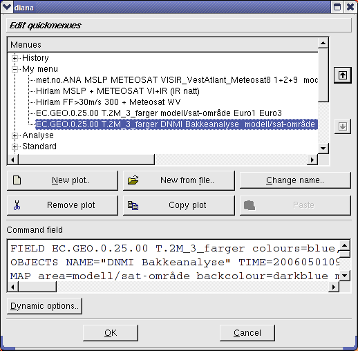
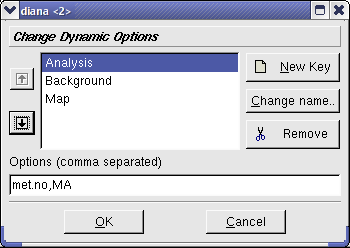

Quick menus
Quick menus

The Edit menus button shows a powerful dialogue for changing the
menus.

-
At the top we have the menu tree. Click a menu name to choose the entire menu,
click + to show all the individual plots in a menu and click a plot to
choose.
-
The arrows on the right are used to move a menu or plot up or down in
the list. Notice that the fixed menus can not be moved, only the private
ones.
-
The buttons change name and functionality depending on the context:
-
New plot or New menu will make a new empty plot or empty
menu (depending on where you are in the list), respectively. Will ask
for a name.
-
Remove plot or Remove menu deletes the
chosen menu item, or menu,
and makes the Paste... button
active/available. Remove menu deletes the menu
file from your filesystem.
-
Copy plot or Copy menu copies the chosen menu item, and
makes the Paste ... button active/available.
-
Paste plot or Paste menu adds what you have either copied
or deleted to the list (underneath the chosen menu item).
-
New from file lets you add a new menu from
file. The menu file will be copied to $HOME/.diana/
-
Change name requests a new name for a plot or menu item.
-
Dynamic options - is used to edit the minor choices available in
the quick menu - only works for private quick menus. A dynamic choice
consists of a key and a comma separated list containing the
alternatives available for the key. In the quick menu text, occurrences of
@key name will be replaced by the chosen element.

To quickly add a plot to a private menu you can use F9 in the main
window. Chose the menu you want to add the plot to, and click ok. To
make a new menu first, chose Make new first.

F10 and F11 are used in the main window to jump forward and backwards in
the History list. To quickly jump between all the quick menus use
ALT+arrowkeys. Hold the ALT-key down and jump backwards and
forwards with the right/left arrow key. As long as you hold the ALT-key
down a window with the name of the plot will be shown. The up/down
arrow keys jumps between the different quick menus. When you release the
ALT-key you'll activate the plot shown in the window. Alternatively
you can press ESC to cancel the operation (and then let go of the
ALT-key).